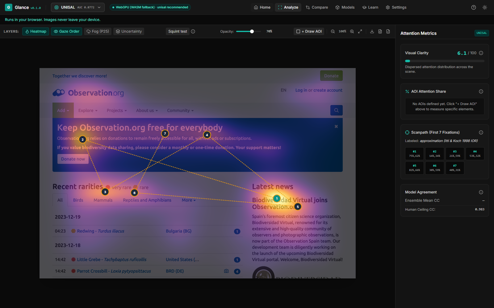

See what gets the first glance.
Free attention heatmaps for design reviews. Predict early visual focus directly on your computer—no images ever leave your device.
- Zero cloud upload
- No account needed
- Browser + desktop app
- Windows + macOS · MIT code

How it works in 3 steps
Form an attention hypothesis in seconds without setup or telemetry.
-
Add your design
Drop a screenshot or export (PNG, JPG, WebP) of your landing page, banner, UI element, or thumbnail.
-
Compute attention locally
Local vision models estimate where visual contrast, shapes, and color draw the first glance in early free viewing.
-
Inspect focal hierarchy
Review predicted attention hotspots, check competing elements, and verify your main call to action is seen first.
Give your next review a starting point
Catch visual hierarchy flaws during design review before conducting user testing.
Focus order
Inspect likely attention around your headline, image, and main action before conscious reading begins.
Find competing elements
Spot high-contrast secondary badges, background graphics, or clutter that fight against your primary action.
Compare one change
Draw areas of interest, then compare predicted attention shares between two versions before launch.
Your image stays on your computer
Glance is designed to run installed ONNX models locally. The first model download needs a connection. External integrations and MCP clients have their own privacy boundaries. No user images or telemetry are ever sent to an external server.
Review integration setup →Backed by published visual attention research
Glance models are built on peer-reviewed saliency publications and evaluated on independent benchmarks against split-half human eye-tracking ceilings. Predictions estimate where human eyes tend to land in early viewing (~3 seconds); they are statistical estimates, not guarantees.
UNISAL
Fast and light. Good first check for any image. Unified lightweight model with domain subnets for image and video saliency.
TranSalNet
Sees the whole layout. Better on busy pages where context matters. Combines CNNs with transformer attention blocks for global structure.
SUM
Tuned per content type: web pages, ads, e-commerce, photos. State-space modeling (Mamba) adapting to varied visual design domains.
A prediction you can question
Predictive eye tracking estimates where people may look during early free viewing. It cannot tell you whether they understand your message, remember your brand, or buy your product. Use Glance to form an early attention hypothesis—not as a substitute for real usability testing.
Read the science and limits →Choose your next check
Compare tools, inspect research methodology, or review practical design guides.
Choosing an alternative?
Head-to-head comparisons
Questions before you start
Clear facts about technology, privacy, and licensing.
Does Glance record my eyes?
No. Glance predicts likely attention from an image. It does not record gaze or use a camera.
Is Glance free?
Glance is a free, open-source desktop app in development. Its own code is MIT; model assets have separate terms.
Does Glance offer free AI eye tracking?
Glance is a free saliency map generator for predicting attention. Actual eye tracking requires recorded gaze; a prediction does not measure your eyes.
Can I use Glance as a free neuromarketing heatmap?
Use Glance to form an early attention hypothesis. It does not measure emotion, memory, purchase intent or conversion.
See what gets the first glance
Try Glance in your browser now without installing anything, or download the desktop app for local batch reviews.